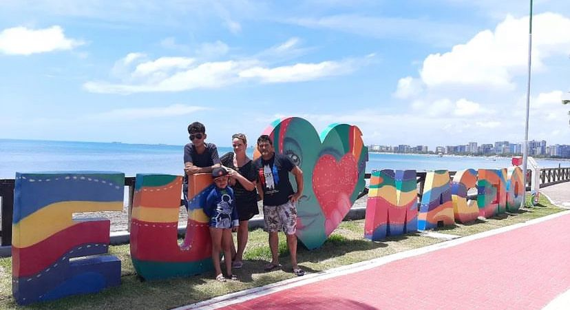

O antepassado da família da minha mãe que veio da Itália para comprar terras no Brasil era um verdadeiro pioneiro. Imagino que ele tenha sido movido por um desejo profundo de buscar uma vida melhor para si e para os seus. Sua coragem e determinação o levaram a explorar terras desconhecidas, em busca de oportunidades para construir um futuro próspero. É inspirador pensar na jornada que ele deve ter enfrentado, deixando para trás sua terra natal em busca de novas possibilidades. Sua história é um lembrete do espírito empreendedor e da determinação que caracterizam a nossa família.
Os dias dos meus pais são bem movimentados e cheios de responsabilidades. Minha mãe é funcionária pública e trabalha duro, ela tem dois padrões, o que significa que sua carga de trabalho é bastante intensa. É impressionante vê-la equilibrar suas responsabilidades profissionais com os compromissos familiares.
Meu pai também é funcionário público, o que torna nossa casa um ambiente onde se discute bastante sobre questões do governo e da sociedade. Além do trabalho no serviço público, meus pais têm um lado empreendedor. Eles investem em imóveis, comprando casas para aluguel ou para vender posteriormente.
Essa combinação de trabalho no setor público e investimento imobiliário nos ensina muito sobre planejamento financeiro e empreendedorismo. Ver meus pais se dedicando a essas atividades nos mostra a importância de diversificar fontes de renda e estar preparado para o futuro. É inspirador ver como eles conseguem equilibrar tudo com tanto comprometimento e determinação.
Em nossa família, somos quatro. Minha mãe, Cássia, tem 40 anos, é uma pessoa incrível, sempre se dedicando ao seu trabalho no serviço público e ainda encontrando tempo para cuidar de nós. Meu pai, Luiz, com 50 anos, é o alicerce da nossa casa, trabalhador e sempre presente para nos apoiar. Meu irmão, Arthur, é o caçula, tem apenas 10 anos, mas sua energia e alegria contagiam todos ao seu redor. E claro, eu, cada um de nós com nossas próprias personalidades e sonhos, formamos uma equipe unida, pronta para enfrentar os desafios e compartilhar os momentos felizes da vida juntos.
Uma das curiosidades da nossa família foi tomar uma decisão importante ao deixar São Paulo e se mudar para Londrina, em busca de uma vida melhor. Foi uma mudança desafiadora, mas cheia de esperança e determinação. Desde então, estamos nos adaptando à nossa nova cidade, enfrentando os desafios com coragem e perseverança. Essa decisão reflete nosso compromisso em construir um futuro mais promissor e estável para todos nós. Estamos orgulhosos do progresso que fizemos e gratos pela oportunidade de recomeçar em um lugar onde podemos prosperar juntos.
